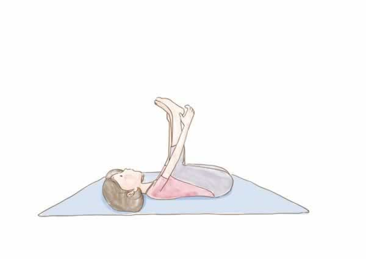
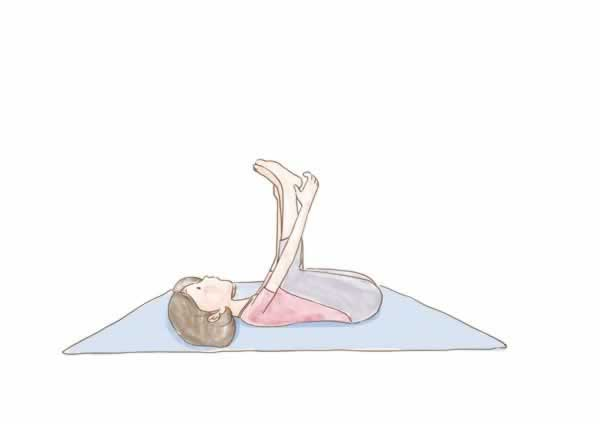
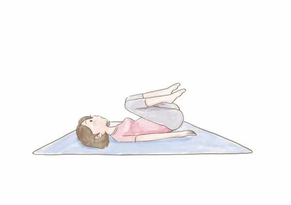
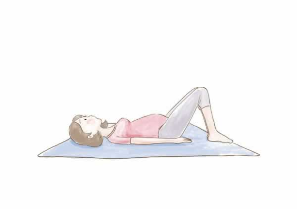
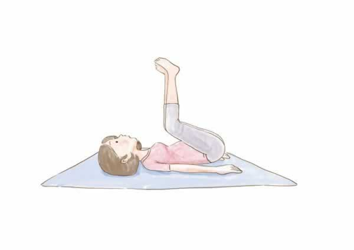
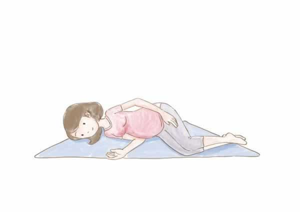
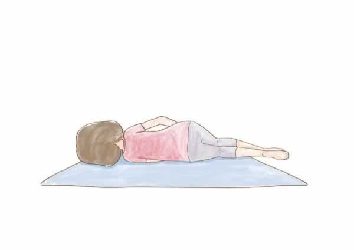

孕期瑜伽：婴儿式
瑜伽是一种很柔软的运动，非常适合准妈妈的生理需要，现在也有专门为准妈妈量身打造的孕期瑜伽，对调节身心很有帮助。
孕中期时，准妈妈应该有意识地锻炼骨盆和髋部，为分娩做好准备。下面为准妈妈介绍一种可以帮助伸展髋部和骨盆部位的瑜伽——婴儿式。
1. 仰卧，双膝屈于胸前。向上举起双脚，小腿与地面垂直。


2. 双手握住两脚外侧边缘，两腿膝盖靠近腋窝，尾椎骨贴紧地面。

3. 保持这个姿势，以感觉舒适为限度，然后双脚放回地面，双膝弯曲。

4. 双膝屈于胸前，吸气。

5. 呼气，双膝置于身体右侧并贴地。注意不要向上抬脚。


7. 吸气，双膝恢复起始姿势。
8. 身体每侧动作各重复5次。
第5步以后的动作可以减轻练习时髋部所产生的紧张感。但是要注意，这套瑜伽动作不适合孕晚期的准妈妈练习，尤其是怀孕30周以后。